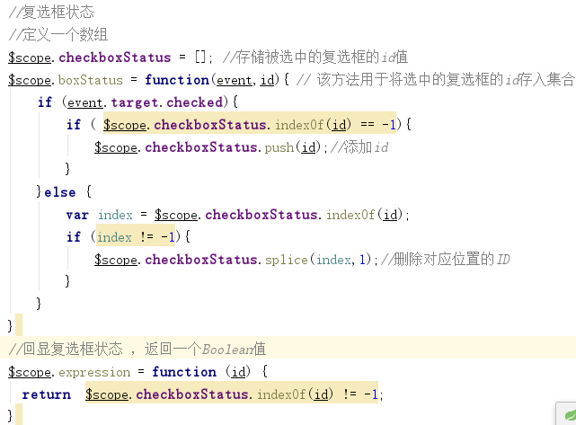
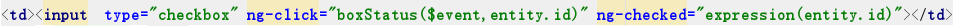

思路分析：
在angularJS中，我们可以使用ng-checked="expression()"来设置复选框的状态；当expression()返回true时，该复选框为选择中状态，反之为非选中状态；
实现步骤：
1.在baseController.js中编写代码如下：（由于该方法使用频率较高，所以我将其放在baseController.js中）

2.在前端页面复选框标签进行如下设置：

注：$event : 固定参数，可以通过$event.target.checked 获取 当前复选框的选中状态
entity.id: 为当前复选框的id所对应的的id值。（获取id的方法根据个人业务而定）
以上就是在项目中用到的设置复选框回显状态的方法，希望对你有所帮助。